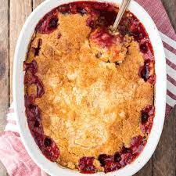

Cherry Dump Cake

Description
Cherry dump cake is a deliicious, moouth-watering desert which will bring heaven to your mouth from the first bite itself.
It contains 333 calories, 56.5g carbohydrates, 2.4g proteins, 11.1g fat, 10.2mg cholestrol, 281.4mg sodium.
This is the perfect recipe to make when you have a date at home. It's a meal you can cook together with your partner or have it ready beforehand to blow
their minds. The battle of sour cherries with the sweetness of the dumpling cake is one to die for.
Ingredients
- 2 (21 ounce) cans cherry pie filling
- 1 (15.25 ounce) package white cake mix
- Quarter cup butter, melted
- Half cup coarsely chopped pecans
Steps
- Preheat the oven to 350 degrees F (175 degrees C).
- Spread cherry pie filling over the bottom of a 9x13-inch baking pan.
Stir cake mix and butter together into a gooey, clumpy mixture.
Break into pieces between your fingers and crumble evenly on top of the cherry filling. Sprinkle pecans on top.
- Bake in the preheated oven until golden brown on top, 35 to 40 minutes.
Return to home page